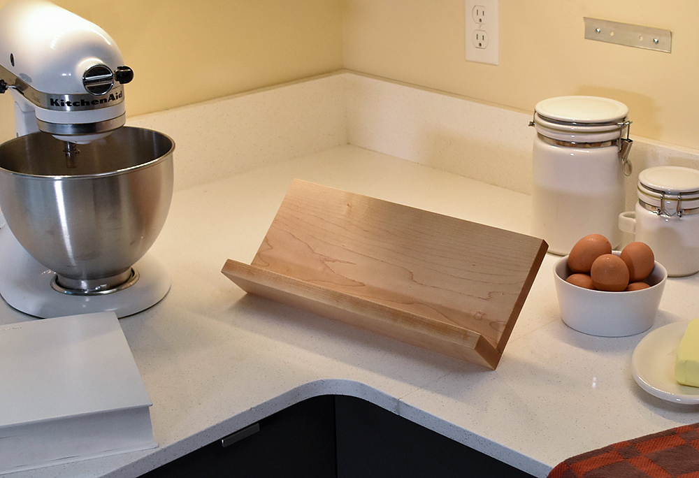

Computer-aided design and cutting
Parametric Design
To begin with, I decided to make a bookstand (lectern) for textbooks so that I can read them without having to lean over them and so that they take up less workspace. This should result in decreased strain on my neck and hopefully improve sleep quality somewhat. I will be using the model displayed in the following picture for reference. It is a relatively simple construction, comprised of only 3 or 4 parts, but it is a thing I had been meaning to purchase and will be beneficial for me.
Preparation
As I have some experience with CAD modelling with Fusion 360 I felt that a short instruction video on parametric modelling would suffice as preparation for the technical part so I watched this video provided by Hafliði on the course webpage.
In order to get a better overview of the benefits and capabilities of laser cutting I watched two pre-recorded lectures also provided on the course website.
Modelling
IN PROGRESS.